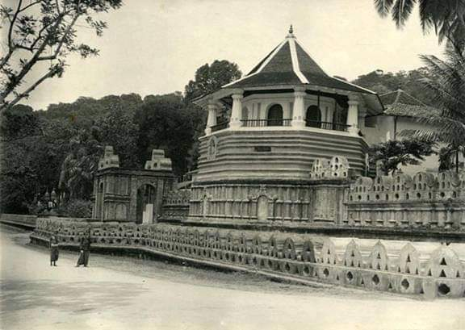
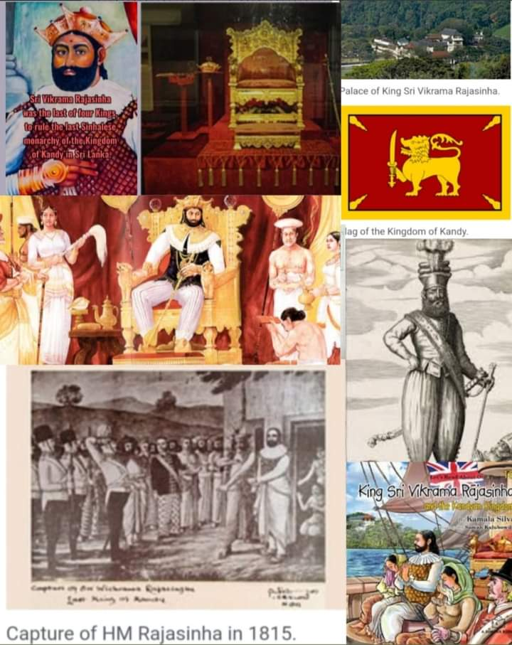

Sena Sammatha Wickramabahu (1473–1511) was the first king of the Kingdom of Kandy, he was a royal from the Kotte Royal Blood line and ruled Kandy as a semi-independent kingdom under the Kingdom of Kotte, making it the new capital of the Kandyan Kingdom. Sena Sammatha Wickramabahu was followed by his son Jayaweera Astana (1511–1551) and then by Karaliyadde Bandara (1551–1581) who was succeeded by his daughter Dona Catherina of Kandy (1581–1581). Dona Catherina was succeeded by Rajasinha I. Rajasinha I however, preferred to rule the hill country from the Kingdom of Sitawaka on the west of the island. A period of turmoil for power ended with the ascent to the throne by Konappu Bandara who came to be known as Vimaladharmasuriya I. Having embraced Buddhism, he consolidated his authority further by bringing the tooth relic of the Lord Buddha to Kandy from a place called Delgamuwa In 1592 Kandy became the capital city of the last remaining independent kingdom in the island after the coastal regions had been conquered by the Portuguese. Several invasions by the Portuguese were repelled, most notably in the campaign of Danture. After the Sinhalese–Portuguese War and the establishment of Dutch Ceylon, attempts by the Dutch to conquer the kingdom were repelled. The kingdom tolerated a Dutch presence on the coast of Sri Lanka, although attacks were occasionally launched. The most ambitious offensive was undertaken in 1761, when King Kirti Sri Rajasinha attacked and overran most of the coast, leaving only the heavily fortified Negombo intact. When a Dutch retaliatory force returned to the island in 1763, Kirti Sri Rajasinha abandoned the coastline and withdrew into the interior. When the Dutch continued to the jungles the next year, they were constantly harassed by disease, heat, lack of provisions, and Kandyan sharpshooters, who hid in the jungle and inflicted heavy losses on the Dutch. The Dutch launched a better adapted force in January 1765, replacing their troops' bayonets with machetes and using more practical uniforms and tactics suited to jungle warfare. The Dutch were initially successful in capturing the capital, which was deserted, and the Kandyans withdrew to the jungles once more, refusing to engage in open battle. However, the Dutch were again worn down by constant attrition. A peace treaty was signed in 1766. The Dutch remained in control of the coastal areas until 1796, when Great Britain took them over (while the Netherlands under French control) due to the Kew letters during the Napoleonic wars. British possession of these areas was formalized with the treaty of Amiens in 1802. The next year the British also invaded Kandy in what became known as the First Kandyan War, but were repulsed. As the capital, Kandy had become home to the relic of the tooth of the Buddha which symbolizes a 4th-century tradition that used to be linked to the Sinhalese monarchy, since the protector of the relic was the ruler of the land. Thus the Royal Palace and the Temple of the Tooth were placed in close proximity to each other. The last ruling dynasty of Kandy were the Nayaks. Kandy stayed independent until the early 19th century. In the Second Kandyan War, the British launched an invasion that met no resistance and reached the city on February 10, 1815. On March 2, 1815, a treaty known as the Kandyan Convention was signed between the British and the Radalas (Kandyan aristocrats). With this treaty, Kandy recognized George III as its King and became a British protectorate. The last king of the kingdom Sri Vikrama Rajasinha was captured and taken as a royal prisoner by the British to Vellore Fort in southern India along with all claimants to the throne. Some of the family members were also exiled to Tanjore (now known as Thanjavur, in Tamil Nadu). Their erstwhile living place is still referred to as "Kandy Raja Aranmanai" on the eastern part of Thanjavur town on Old Mariamman Koil Road. Colonial ERA
During the British period in Sri Lanka the history of Kandy and its townscape witnessed rapid and drastic change and particularly after the Uva Rebellion. Sir Lowry is noted for recording in his Gazetteer "The story of English rule in the Kandyan country during the rebellion of 1818 cannot be related without shame...Hardly a member of the leading families remained alive...Those whom the sword and the gun had spared, cholera and small pox and privations had slain by the hundreds...Others became ignorant and apathetic. Any subsequent development efforts of the government for many years were only attempts begun and abandoned. The first time Sri Lanka fully fell into the hands of a foreign power was in Kandy with the signing of the Kandyan Convention in 1815 at the Sri Dalada Maligawa. The king, Vikrama Rajasinha of Kandy who was of South Indian ancestry faced powerful opposition from the Sinhalese chieftains and sought to reduce his power. A successful coup was organized by the Sinhalese chieftains in which they accepted the British crown as their new king. This ended over 2500 years of Sri Lankan monarchs and the line of Kandyan monarchs and Rajasinha was taken as prisoner. By 2 March 1815 the islands sovereignty was under that of the British Empire. The treaty was not signed by the deposed King but by members of his court and other dignitaries of the Kandyan Kingdom. In 1848 led by Gongalegoda Banda and Puran Appu saw the rebellion known as the Matale Rebellion. Prior to that the city and the country had been under British rule for 32 years, in which the British had expropriated the common land of the peasantry and reduced them to extreme poverty. The Kandyan villagers were forced to abandon their traditional way of life and become wage-workers in the abominable conditions that prevailed on these new estates and plantations that had been introduced, despite all the pressure exerted by the colonials the Kandyans refused. This forced the British to bring in hundreds of thousands of Tamil coolies from southern India. The Rebellion began on the 26 July 1848 with Gongalegoda Banda, crowned as king, and Puran Appu, as prime minister, and their main objective to capture Kandy back from the British. The Matale Rebellion was a peasant revolt in the hands of the Common people, the Kandyan leadership being totally wiped out after the Uva Rebellion, marked the first step in a transition from the classic feudal form of anti-colonial revolt to modern independence struggles. The leadership was for the first time passed from the Kandyan provinces into the hands of ordinary people or non-aristocrats. In 1944, during World War II, the South East Asia Command of the allies was moved to Kandy, where it remained till the end of the war. Palace of the Tooth relic On the north shore of the lake, which is enclosed by a parapet of white stone dating to the beginning of the 19th century, are the city's official religious monuments, including the Royal Palace and the Temple of the Tooth, known as the Dalada Maligawa (daḷadā māligāva). Reconstructed in the 18th century, the Dalanda Maligawa is built on a base of granite that was inspired by the temples of Sri Lanka's former capital city, Anuradhapura. An array of materials (limestone, marble, sculpted wood, ivory, etc.) contribute to the richness of this temple. Throughout this small holy city, a number of recent Buddhist monasteries can be found. The monumental ensemble of Kandy is an example of construction that associates the Royal Palace and The Temple of the Tooth (Palace of the tooth relic) is the place that houses the Relic of the tooth of the Buddha. Originally part of the Royal Palace complex of the Kandyan Kingdom, it is one of the holiest places of worship and pilgrimage for Buddhist around the world. It was last of a series of temples built in the places where the relic, the actual palladium of the Sinhalese monarchy, was brought following the various relocations of the capital city. The Palace of the Tooth relic, the palace complex and the holy city of Kandy are associated with the history of the dissemination of Buddhism. The temple is the product of the last peregrination of the relic of the tooth of Buddha and the testimony of a religion which continues to be practiced today
  2.POLONNARUWA KINGDOM